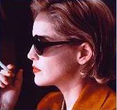

Contents | Features | Reviews | News | Archives | Store |
 |
|
| Movie Credits | Buy It! |
Diabolique
Review by Carrie Gorringe
|  | Directed by Jeremiah Chechik. Starring Sharon Stone, Screenplay by Don Roos. |
As the old dictum of Greek mythology went, anyone whom the Gods wished to punish was first invested by the Gods with hubris. In contemporary Hollywood, the method may be different, but the end result is very much the same. Although Hollywood has always been fond of remaking the same story over and over again (it’s the reason why there are three different versions of The Maltese Falcon, for example, all of which have different titles, and varying degrees of quality), a new wrinkle has been added in the past ten years or so. Film directors not only want to remake the script, but the entire look and feel of a film, and this trend does not seem to be one of achieving aesthetic improvement. Rather, if one will permit a bit of dime-store Freudian analysis on this issue, the zeal with which directors are attempting to remake old favorites has something of an Oedipal Complex about it, as if these filmmakers, many of whom are film-school grads, are haunted by the specter of those great films and directors that have come before them, and feel obliged to indulge in a bit of cinematic parricide before they can truly feel like artists. More often than not, the results have been suicidal rather than parricidal, but there is no shortage of candidates eager to do their worst.
And it always seems to be the directors with the least talent who indulge in this particular attempt at self-immolation. The latest one to light his own pyre is no exception to this rule: one Jeremiah Chechik, he of the somewhat charming-but-dismally lightweight romantic comedy, Benny and Joon (1993). His selection is rather a departure from what one might expect of him, and it’s a tall order. In his remake of Diabolique, Chechik seeks to overcome the work of the venerable French director, Henri-Georges Cluzot, an individual noted for another cinematic classic, The Wages of Fear (1953). For those who are unfamiliar with the original Diabolique, made in 1955, Cluzot’s film is the tale of what happens -- or doesn’t happen -- to a parsimonious and brutal headmaster (Paul Meurisse) of a rundown boy’s school which is owned by his wife (Vera Cluzot), a meek ex-nun with a bad heart. This man’s behavior is so insufferable that even his mistress (Simone Signoret) conspires with the man’s wife to kill him (you know things are bad when a man’s mistress volunteers for such a grisly task). The two of them lure him to the mistress’s family home, drug and drown him, then they take the body back to the swimming pool on the school grounds and throw it in, figuring that they have an airtight alibi of accidental drowning when the body surfaces. But it doesn’t. When the pool is drained, no trace of the body exists. Then the suit that the dead man was wearing when killed is returned from the dry cleaners, and other strange events follow in viciously funny lockstep to an ambiguous but frightening conclusion. Without giving the ending away, it’s enough to say that the original Diabolique is a brilliant "noir" thriller, with a sense of wit and an attitude about human nature that is so excoriating that it cuts right to the bone; its suspenseful edge stands up to repeat viewings. It is this masterpiece which, in Mr. Chechik’s openly-stated and highly-patronizing opinion, could stand a little "updating."
Unfortunately, as a viewing of the new Diabolique makes clear, it is apparent that the only place in which Chechik chose to push the envelope was in the interview sessions. This Diabolique is not so much an improvement as a regression. Chechik and screenwriter Roos have accomplished the impossible: they have taken a foolproof suspense narrative and drained it of any and all vestiges of suspense. One of the many ways in which these bright boys did so was to take the central plot twist, which occurs at the very end of the original, and to inadvertently give it away after only two-thirds of the film had elapsed. Consequently, to call this film inert is to credit it with more energy than it actually has. Of course, it doesn’t help matters terribly much if a filmmaker’s idea of progress is to substitute flashy camera angles, not to mention a considerable number of annoyingly extreme close-ups, shot in excruciatingly slow motion, for substance. But, then, there are some trivial details that have to be sacrificed when a filmmaker is on a Mission, as Chechik most certainly seems to be. From the triteness of the opening shots of raindrops under the film’s titles (shot in the aforementioned manner), the audience is made to understand that Chechik means "business," no doubt of the most simian type. If the visual hijinks don’t make that obvious, then Randy Edelman’s hysterically portentous music -- a barely-concealed rip-off of Bernard Herrmann’s music for Psycho with none of the inspiration and/or talent behind the original -- should put the matter to rest once and for all. While watching this tortured mess, I was reminded of the similarities between it and the observations that H.L. Mencken made concerning the tortured syntax of President Warren G. Harding; both are like hippopotamuses struggling to free themselves from a pit of molasses. There’s all this thrashing around, and a lot of mess and noise, but not much progress is made.
The same could be said about the poor unfortunates who took up the thankless task of appearing in this film. Stone, Palminteri and Adjani, all fine actors, deserved better (and probably should have known better), but, nevertheless, they gamely attempt to rise above the material. In so doing, their strong efforts have the paradoxical effect of amplifying the weaknesses in the narrative and the resultant gap between their abilities and the film’s weaknesses become embarrassing to watch. In particular, Stone, as Nicole, the mistress, is wasted, in all senses of the word. Her character’s sluttish presence is commanding (perhaps a little too commanding: do Chechik and Roos honestly believe that female math teachers dress in skin-tight short skirts before going off to teach a class of prepubescent boys?) and she hands back what snappy dialogue is allowed her -- some of which is quite clever -- with impeccable wit and timing. This broad is so hard-boiled that you expect her make-up to crack from the heat she radiates. However, even she is eventually swallowed up by the molasses. As Shirley Vogel, the female detective who begins snooping around after the questionable activities of Adjani and Stone, Bates is given the thankless task of providing the only source of intentional humor in the film; her entire dialogue revolves around themes of misandry and breast cancer, topics that are always sure-fire knee-slappers at any sort of social gathering (if Chechik and Roos believe that such sops to supposedly feminist sensibilities will gain them sympathy votes from women in the audience, they would be well advised to think again). The actors are also not well-served by the decision to change the ending of the film, from the deliciously chilling and sly ambiguity present in the original, to something far more literal and tendentious; what was supposed to be suspenseful inspired ringing peals of laughter from the audience -- and it was the only time its members laughed.
To sum up: rent the original.
Contents | Features | Reviews | News | Archives | Store
Copyright © 1999 by Nitrate Productions, Inc. All Rights Reserved.